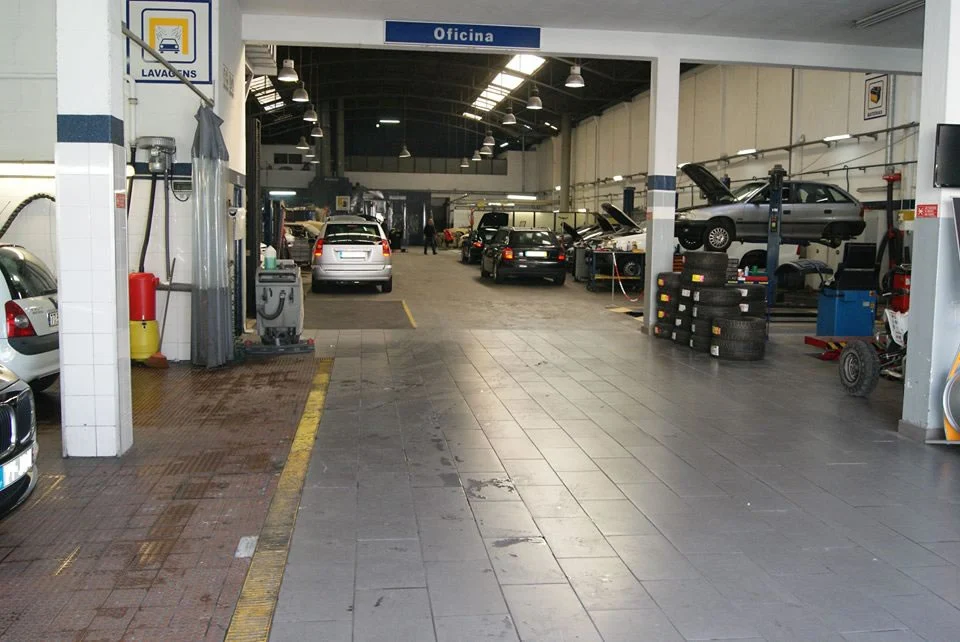
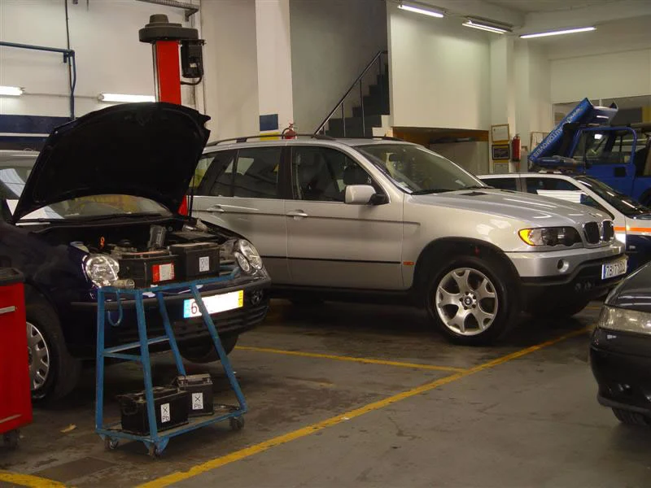

NUCLEOCAR / MATOSINHOSMANUTENÇÃO & RESTAURO
Do dia a dia
ao seu clássico.
Manutenção e reparação multimarcas, diagnóstico e restauro de automóveis clássicos.
Encontrar um serviçoSEGUNDA A SEXTA
08h30–12h30
14h00–18h30

Manter.
Reparar.
Revisões, diagnóstico, climatização e outros serviços de oficina.
02 / O SEU CLÁSSICORecuperar.
Cuidar.
Conheça o restauro multimarcas e as fotografias publicadas pela oficina.

COMECE PELO QUE PRECISA
Uma revisão
ou uma intervenção?
Escolha a área de serviço e reúna a marca, o modelo e uma descrição do que pretende tratar. O diagnóstico e as condições da intervenção são confirmados pela oficina.
Preparar o primeiro contactoESTAMOS EM MATOSINHOS
Fale com a oficina.
Rua Doutor Afonso Cordeiro, 731